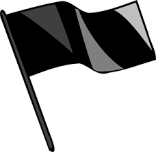

<div class="navbar navbar-expand">
  <a class="navbar-brand" [routerLink]="['/messages/0']">
    
    BlACK FLAG
  </a>
  <button *ngIf="isConnected" type="button" aria-label="Toggle sidenav" mat-icon-button (click)="sidenav.toggle()" color="secondary">
    <!-- Mes contacts<mat-icon aria-label="Side nav toggle icon">people</mat-icon> -->
    Mes contacts
  </button>
  <button *ngIf="isConnected" type="button" style="float: right" aria-label="LogOut" mat-icon-button (click)="logOut()" color="secondary">
    Se deconnecter
  </button>
</div>

<mat-sidenav-container class="sidenavContainer" >
  <mat-sidenav *ngIf="isConnected" #sidenav mode="over" open="true" class="example-sidenav" fixedInViewport="true" fixedTopGap="64">
    <mat-toolbar color="success">
      <button mat-icon-button [routerLink]="['/dashboard']">
        <mat-icon>group_work</mat-icon>
      </button>
    </mat-toolbar>
    <mat-nav-list>
      <a mat-list-item>
        <mat-icon>yes </mat-icon>yes yeselfgnaelkgnaekl
      </a>

    </mat-nav-list>
  </mat-sidenav>
  <mat-sidenav-content class="sidenavContent">
    <ng-content></ng-content>
  </mat-sidenav-content>
</mat-sidenav-container>
